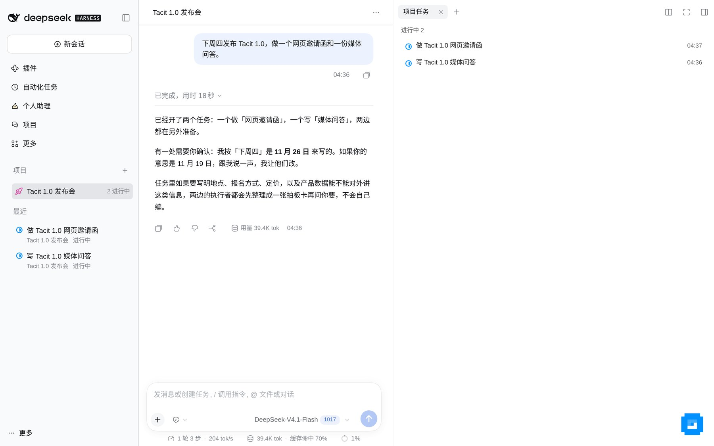

一个真正好的 agent 产品，不需要 agent 这层抽象
Tacit 1.0 今天开源。
大多数 agent 产品，先让你认识 agent。给它起名字，选头像，配技能，再把它拉进一个群。
我们的看法不同。
Tacit 的出发点很简单：你要的是把事情做完。所以在 Tacit 里，你看不到 agent 这一层。没有花名册，没有角色，没有要你配的插件和技能。你看到的只有三样东西：项目，任务，和一块叫「待你决定」的看板。
我们一开始也不是这么想的。我们也给每个助理起过名字、配过头像、写过人设。做了几个月才发现，用的人一样都不关心。他们只问两件事：那件事做到哪了，现在是不是该我了。
下面是这对你每天用它意味着什么。
你只说目标。我说了一句：「下周四发布 Tacit 1.0，做一个网页邀请函和一份媒体问答。」它拆成两件事，同时开工，还把「下周四」算成了 11 月 26 日，让我确认。我没给的事实它一处没编：问答稿 21 处、邀请函 29 处，全部标出来等我补。我没有选谁来做，到现在也不知道是「谁」做的。


多出来的那个 agent，其实是另一份上下文。我们翻过八个开源多 agent 项目的源码，没有哪个在共享上下文窗口：子 agent 拿到的是一段任务说明，交回来的是最后一条消息。所谓多 agent，拆开看就是 fork。把这件事需要知道的复制一份，交给一个干净的会话，做完收回来。那么要传好的是上下文，谁来做反而不重要。在 Tacit 里，你的原话逐字带进每个任务，不经转述。我只在问答那件事里补了时间和地点，邀请函自己跟着改了，没有人替我传话。
该你的时候，它来找你。事情并行跑起来，最难的是看不过来。「待你决定」只列三种事：等你拍板的，等你验收的，出了错的。卡片上没有按钮。点一下，一句话写进输入框，你改完再发。只有你点了验收，一件事才算做完，助理不能替你说「完成了」。

不用你配，也不用你说第二遍。同一个问题你在交付后说了三次，夜里它自己起草一版新的做事说明，早上问你用不用。你屏幕上、飞书里正在发生的事，它整理成一条时间线，每条都指得回原始记录。所以你不用每次从头讲背景。
agent 会越来越强，也越来越便宜。留下来、越积越多的是上下文：你说过的话，拍过的板，验收过的东西。执行的那一层可以整个换掉。今天它是 DeepSeek Harness 里的一个会话，你也可以在任务里换成 Claude Code 或 Codex，你看到的东西不变。
如果你觉得用 AI 就是带一支 AI 团队，Tacit 会让你有点意外。这里没有团队要带。
交代一句，心领神会。
Tacit 是 DeepSeek Harness 的一个开源插件，代码在 github.com/DKKD13/tacit-dsh。想看各家多 agent 产品怎么传上下文、以及我们定下的九条判断，在这篇拆解里。